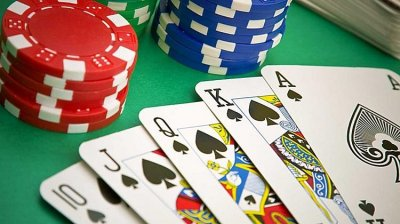

Om mig
Mitt namn är Nils Salomonsson, jag är 16 år och går mitt andra år gymnasiet. Om du inte vet vad klockan är, klicka här för att se klockan
Mitt namn är Nils Salomonsson, jag är 16 år och går mitt andra år gymnasiet. Om du inte vet vad klockan är, klicka här för att se klockan
Jag bor hemma med min Familj som består av mina föräldra och två syskon. En äldre bror och en yngre.
Poker är ett intresse jag ganske nyligen har plockat upp. Under det senaste året har jag och några kompisar kört nån eller några gånger i månaden. För att inte skapa några problem brukar vi köra med ganska lite pengar involverad. Ett annat problem som uppstår är att det är svårt att köra om man inte är tillräckligt många, vilket byter att man måste få med tillräckligtg många för att kunna spel. Vi brukar säga att vi vill vara minst 5 eller 6. Vi spelar den absolut vanligaste varianten: texas holdem.
Schack är någonting som jag spelade väldigt mycket när jag var mindre, framförallt i lågstadiet. Efterdet slutade jag med detta under en väldigt lång tid. Fram tills nu, när jag återigen har börjat spela, vilket jag har gjort under de senaste månadera. Nu spelar jag dock mest online. Detta gör jag på chess.com
Redan när jag var liten hade jag ett playstaion där jag ofta satt och spelade. Sedan när jag blev lite äldre skaffade jag en PC och än idag är det inte ovanligt att hitta mig framför datorn.
Redan när jag var drygt två år gammal stog jag för första gången på ett par skidor. Därefter har jag behållt intresset och varje säsong fått in några veckor av skidåkning. Oftast åker jag upp med familj men ibland även med kompisar.
Jag går teknik linjen på gymnasiet och går just nu i tvåan. Jag valde den här linjen för att jag var intresserad av de ämnen man fokusrade mest på i den här linjen.